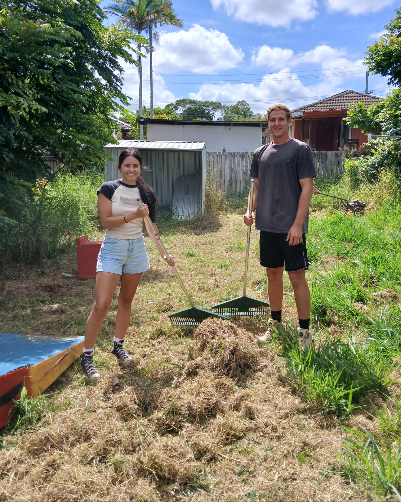
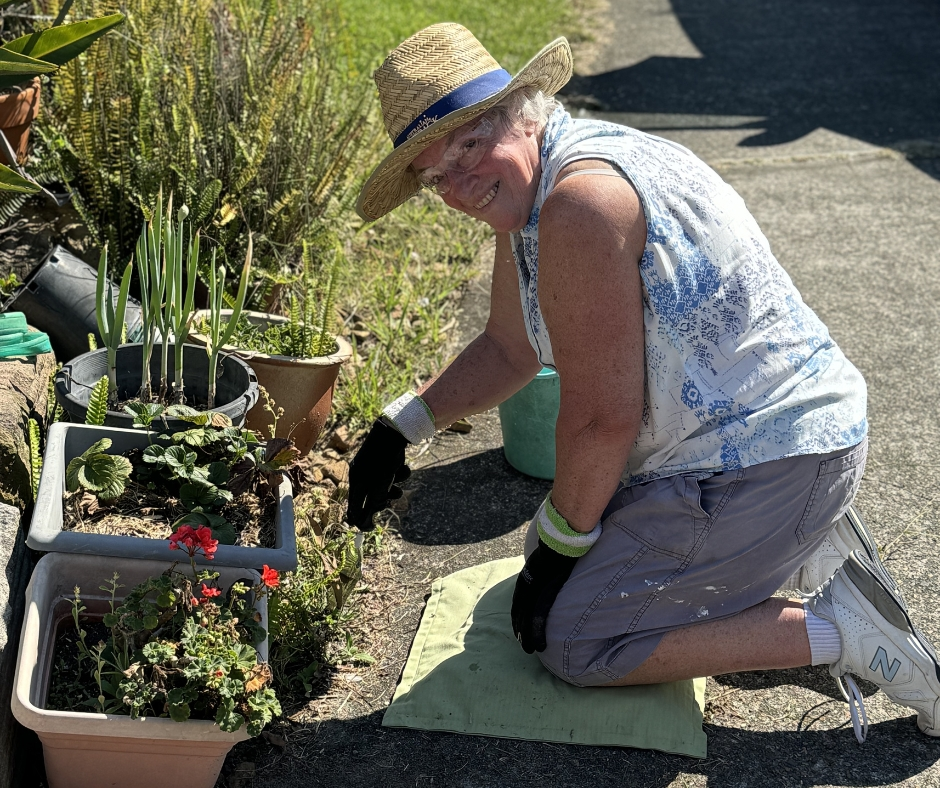
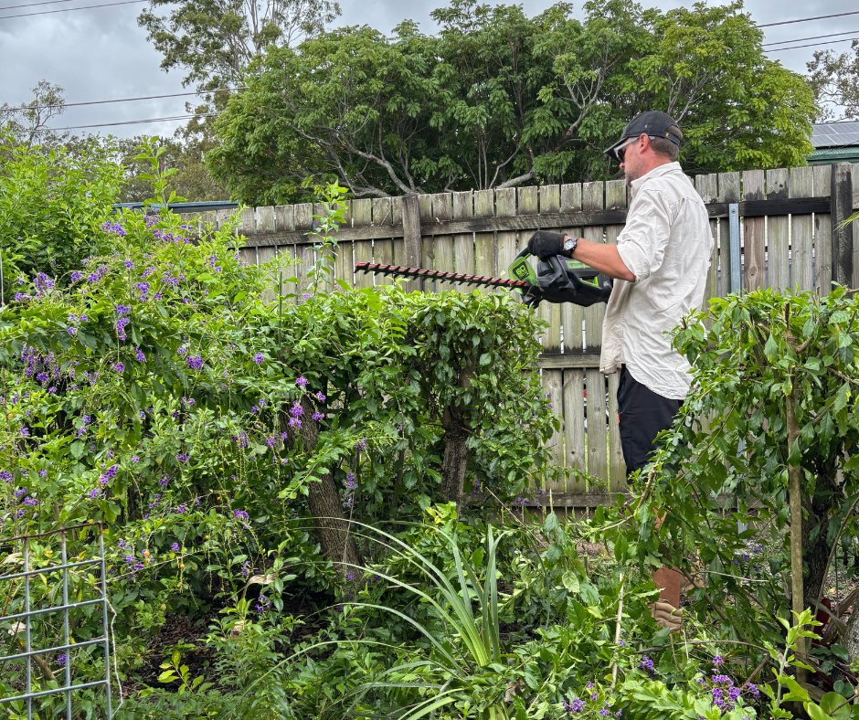
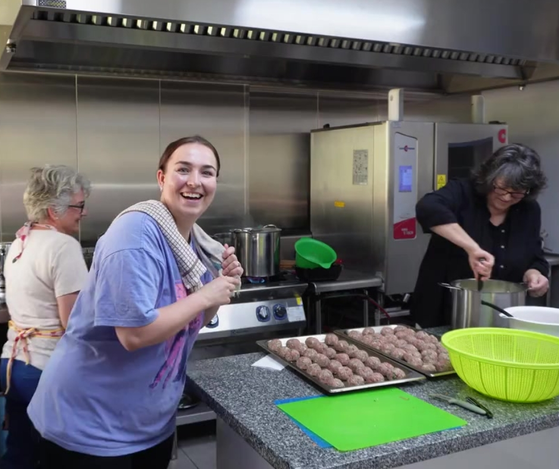
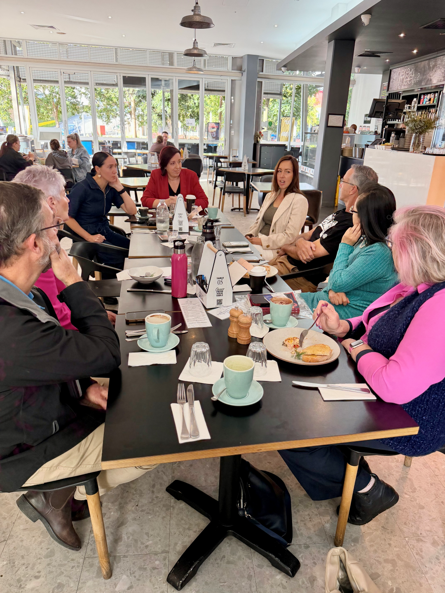
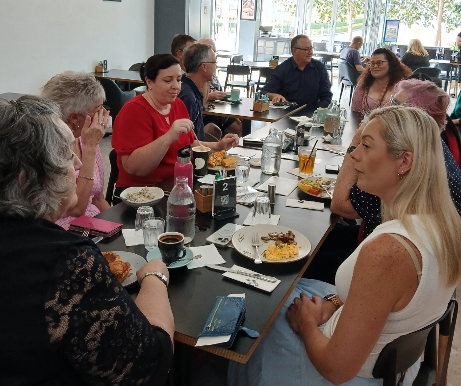
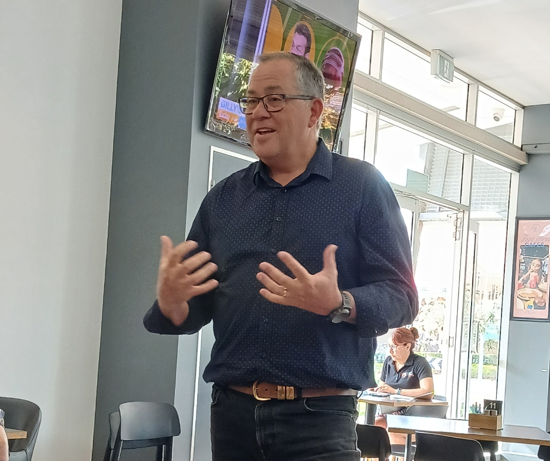

Logan Connect
Building connection and community in Logan — through
practical care, real relationships, and people who show up.
Who we are
The community and social outreach
arm of Park Ridge Baptist Church.
Logan Connect exists to build connections and community around everyday issues — the real challenges people face in daily life — so that individuals, families, and neighbourhoods can flourish together.
Through Logan Connect, we serve and support our local community in practical and meaningful ways, creating opportunities for people to experience care, connection, and support.
Our Purpose
Why Logan Connect exists
We believe that strong communities are built through real relationships, practical care, and
people working together.
Support people facing practical challenges
Create opportunities for people to serve others
Partner with local organisations and leaders
Contribute to the wellbeing of the Logan community

Practical care
Neighbour in Need
One of Logan Connect’s key initiatives, Neighbour in Need cares for people in our community who are facing challenges and need practical support — responding to real, everyday needs.
Yard clean-upsMinor repairsHelp around the homeFamily supportElderly & vulnerableCommunity projects
Serving our community together
On the first Sunday of each month, Park Ridge Baptist Church doesn’t hold a regular worship service. Instead, we gather as a church to serve our community — putting faith into action.



Connection
Community Breakfast
A relaxed monthly breakfast for business and community leaders — an opportunity to connect over a meal, hear from a guest speaker, and build relationships with others who care about the flourishing of our region.
- A shared meal and good conversation
- A guest speaker each month
- Space to build genuine partnerships
Open to
Business ownersCommunity leadersPastors & ministry leadersSchool leadersAnyone passionate about Logan



Get involved
There’s a place for you in Logan
Connect.
Whether you’re looking for support, wanting to serve, or hoping to build
stronger community connections — we’d love to hear from you.
Volunteer
Join a project and serve alongside others in our community.
Submit a need
Reach out for yourself or someone you know who could use practical help.
Partner with us
Connect as an organisation, business, or local leader.
Attend a breakfast
Come along to our monthly community breakfast.
Support our community
Support Logan Connect.
Your generosity helps support practical care and connection in our community.
Contact
Let’s connect.
Reach out to Logan Connect — we’d love to hear from you.